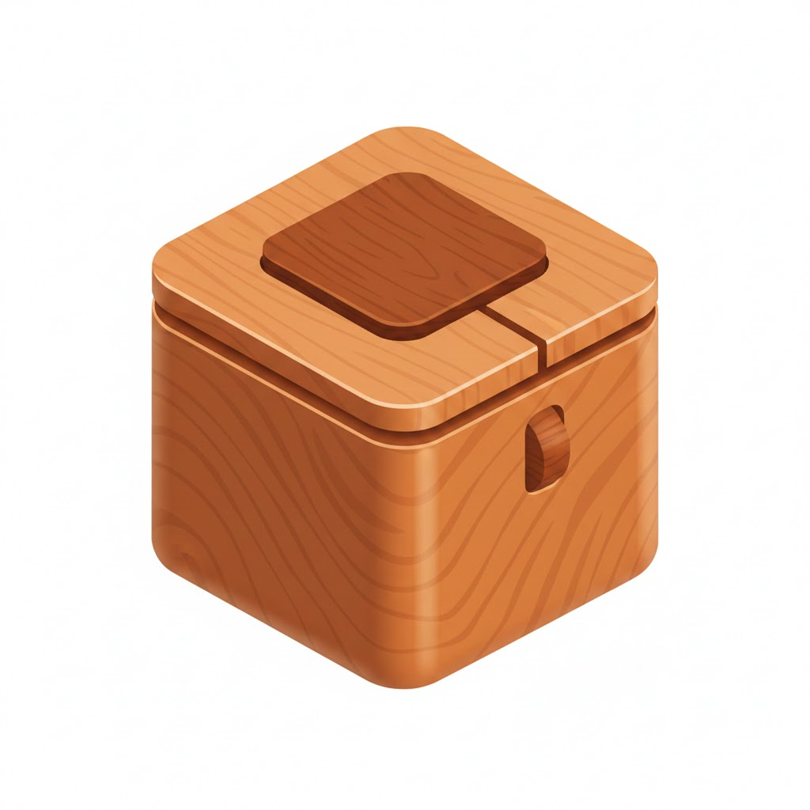
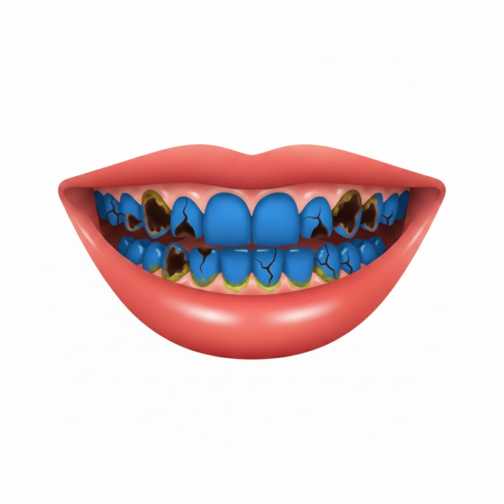
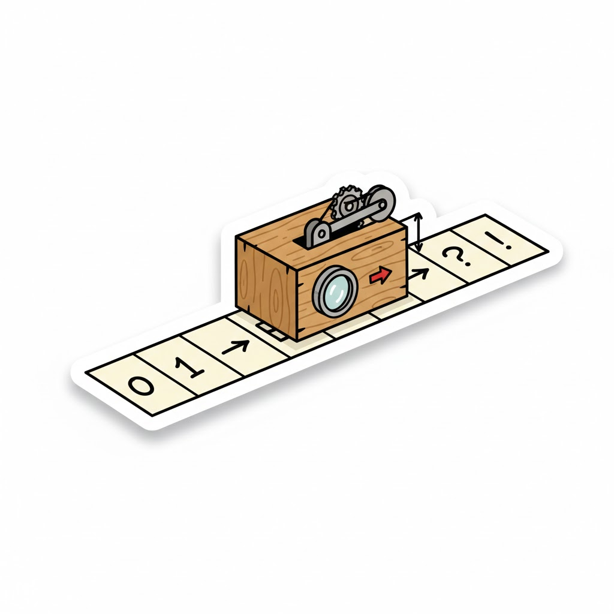

Meu primeiro post
Por: Fabricio Kotula
Boas-vindas ao meu novo blog sobre xadrez! Aqui vou compartilhar a historia do xadrez.
Vou compartilhar a historia do xadrez em mini textos
Por: Fabricio Kotula
Boas-vindas ao meu novo blog sobre xadrez! Aqui vou compartilhar a historia do xadrez.
Por: Fabricio kotula
O xadrez surgiu na Índia, por volta do século VI, com um jogo chamado Chaturanga. Ele representava estratégias militares e o movimento de diferentes tropas.
Fonte: chat gpt Opção

Por: Fabricio Kotula
O jogo chegou à Pérsia, onde recebeu o nome de Shatranj. Depois, espalhou-se por outras regiões, especialmente com a expansão do mundo islâmico.
Fonte: Chat GPT.

Por:Fabricio Kotula
Por volta do século X, o xadrez começou a se popularizar na Europa. Durante a Idade Média, tornou-se um passatempo apreciado pela nobreza.
Fonte: Chat GPT
Por:Fabricio Kotula
No século XV, na Europa, as regras foram modificadas, dando mais poder à dama e ao bispo. Essas mudanças tornaram o jogo mais rápido e parecido com o xadrez atual.
Fonte: Chat GPT
Por: Fabricio Kotula
A partir do século XIX, surgiram torneios oficiais e campeonatos mundiais. Atualmente, o xadrez é praticado no mundo inteiro, tanto presencialmente quanto pela internet, desenvolvendo o raciocínio e a estratégia.
Fonte: Chat GPT

Por: Fabricio Kotula
Com o avanço da tecnologia, o xadrez passou a ser jogado em computadores e celulares. Hoje, milhões de pessoas jogam on-line e utilizam a inteligência artificial para aprender novas estratégias.
Fonte: Chat GPT